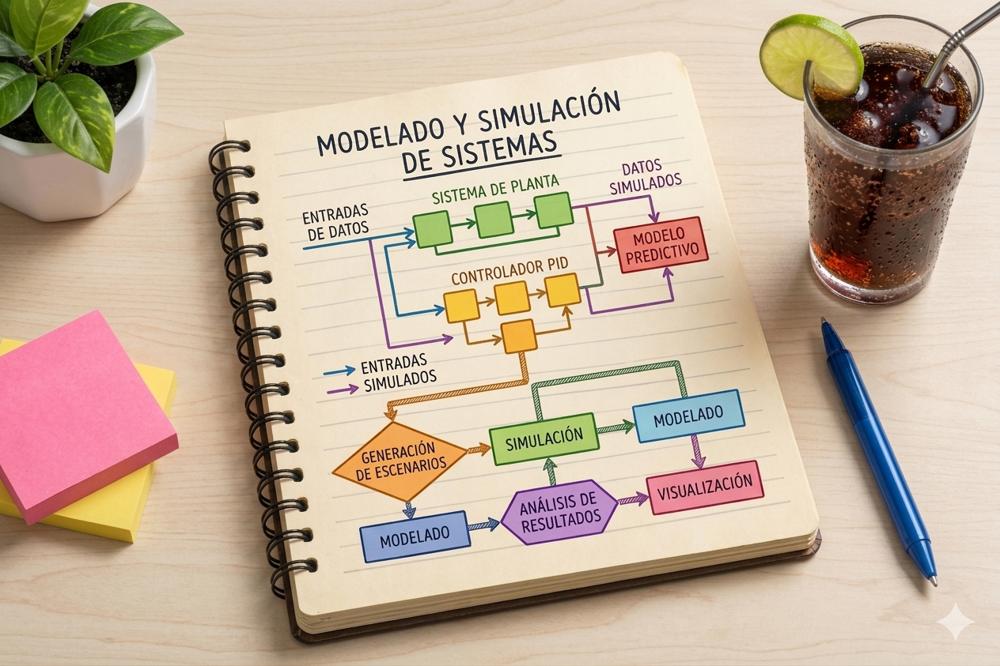
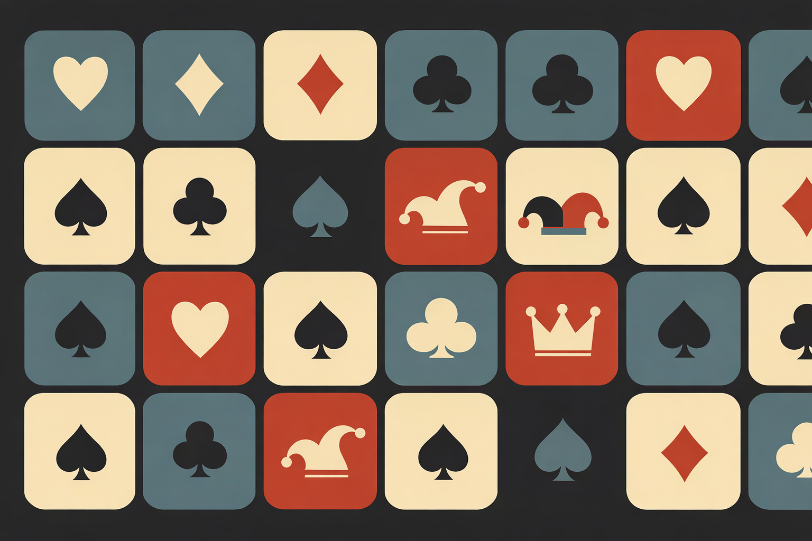
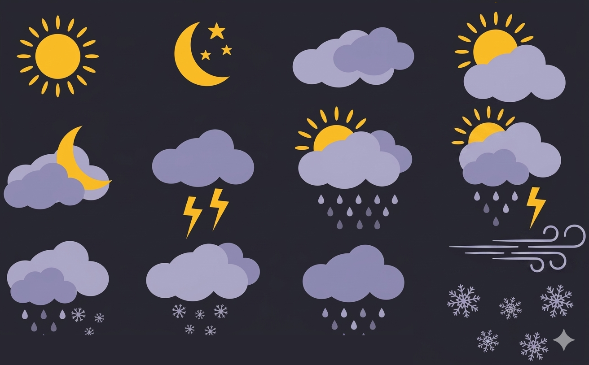
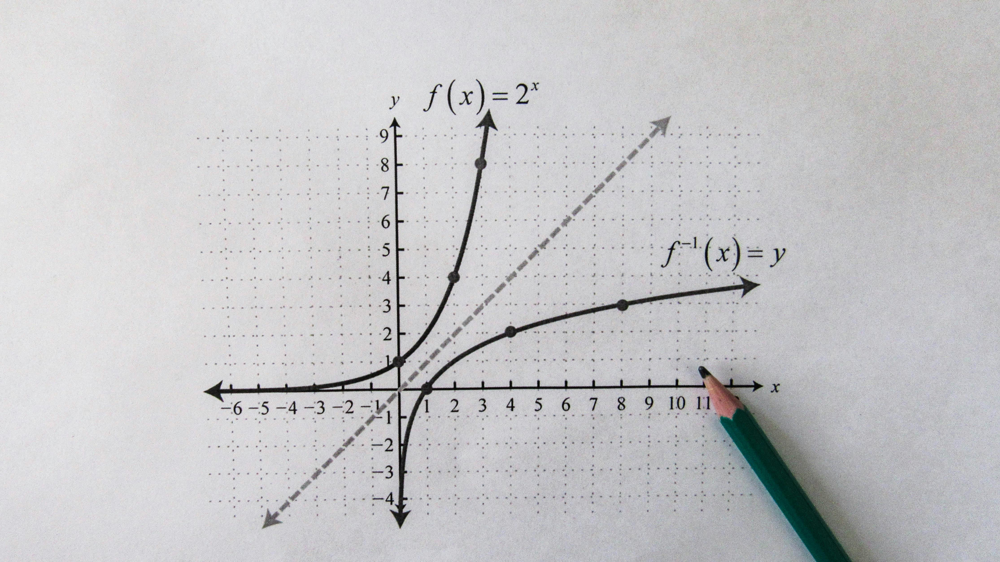
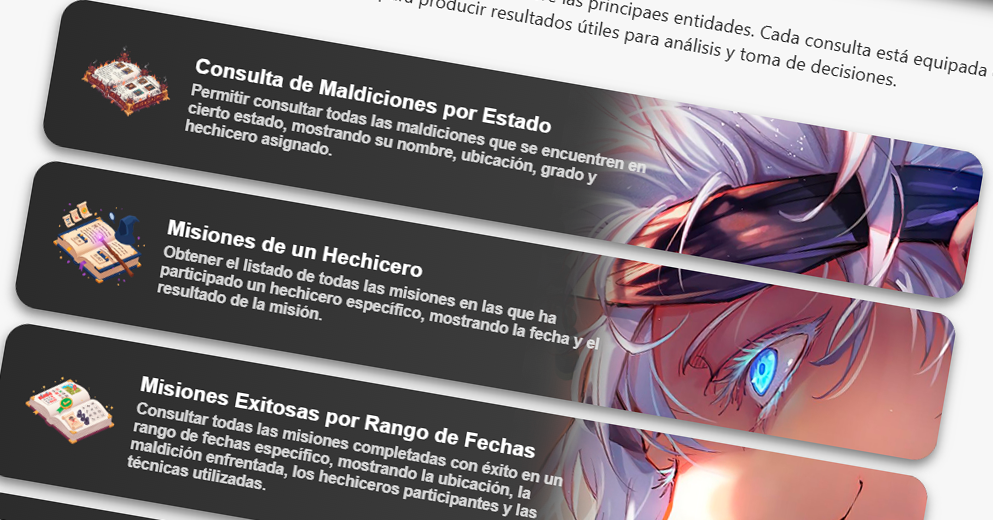
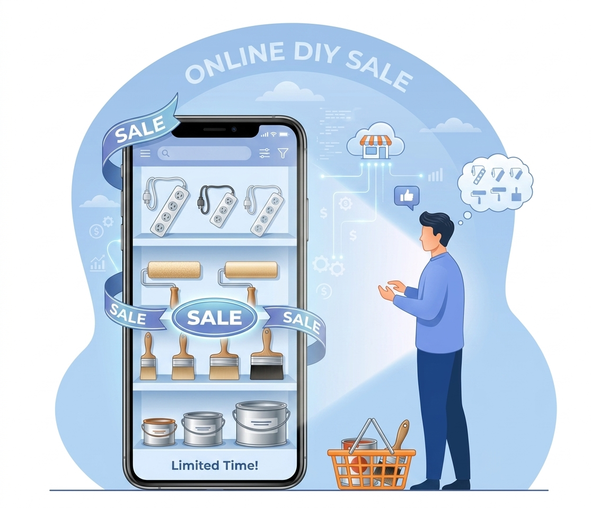

Hello, I'm
Jery Rodríguez Fdz.
🚀 Full Stack Developer, Computer Science Major & Math Lover
I enjoy working with applied mathematics and bringing that analytical mindset into computational development. I work closely with teams to ship scalable applications, strengthen backend systems, and craft visual designs that elevate the overall user experience. Right now I’m deepening my work in artificial‑intelligence architectures and advanced neural‑network design, focusing on their optimization, training, and deployment in real‑world environments.
Havana, Cuba
Available
100% Remote
About me
More about me 📖
I’m currently completing my studies in Computer Science at the University of Havana. I design and develop digital solutions focused on business, visual clarity, and technical scalability. I work with cross-functional teams to build consistent products aligned with real goals. I also do visual design, creating clean interfaces and graphics in Photoshop. You can reach me through any of my social platforms — preferably via Telegram — and I’ll get back to you as soon as I can.
Jery Rodríguez Fernández
jery.rf03@gmail.com
Full Stack, UI Design, Applied Mathematics, Visual Design, Data Visualization, Mathematical Modeling & Optimization
English & Spanish
Career
Professional experience 🛠️
Full Stack Developer
I lead the development of scalable web platforms with React, Node.js, and PostgreSQL. I define architecture, performance, and quality patterns.
Game Developer
Developed a game in Unity and built it for Windows. It's a Strategy card game inspired by the Game of Thrones universe, featuring a custom interpreter that transforms code into playable
Frontend Developer
Built responsive interfaces and collaborated directly with product teams to improve conversions.
Visual Designer
Designed visual interfaces, graphics, and UI assets, working primarily with Photoshop.
My skills
What can I do for you? ⚙️
Web Development
Modern, scalable applications.
UI/UX Design
Intuitive, user-centered interfaces.
Web Applications
Fast, optimized builds.
Backend & APIs
Robust, secure services.
Machine Learning & AI
Neural networks, deep learning, optimization.
Math & Algorithms
Mathematical modeling, optimization, computational theory.
Data Science & Analytics
Statistical analysis, data visualization, insights.
Visual Design & Photoshop
Creative graphics, clean interfaces, visual coherence.
Business Logic & Development
System design, application architecture, enterprise solutions.
Desktop Applications
Cross-platform desktop tools and productivity apps.
Mobile Applications
Fast, intuitive mobile experiences for everyday use.
Startups & Business Services
Lean digital products and services built to grow with your business.
Featured projects
Some of my projects ✨

🍕 Pizza Slice Hub
Web project focused on ordering and showcasing pizza options with a clean, product-driven interface.
JavaScript
React
Web
UI
View on GitHub →

🧬 Population Simulation
Agent‑based population simulator that models aging, mortality, partner formation, breakups, fertility, and multi‑generation dynamics using probabilistic rules.
Python
Agent-Based
Simulation
Probabilities
View on GitHub →

🔎 Information Retrieval Systems
Information Retrieval System integrating web crawling, structured scraping, mathematical retrieval models, vector representations, and ranking algorithms to deliver relevant search results.
Python
Web Scraping
Search
Vector System
Embeddings
View on GitHub →

🧠 Neural Network
Dynamic Multi-Label Neural Network built from scratch using a Perceptron-based architecture with backpropagation and K-Fold cross-validation.
Python
ML
AI
Backpropagation
View on GitHub →

🎲 Game of Throne Card Game
Card game inspired by the rich and complex universe of Game of Thrones. A strategy game featuring an interpreter capable of converting lines of code into physical cards with powers.
C#
Game Dev
Strategy
Code interpreter
View on GitHub →

📉 Academic Dropout & Success Analysis
Statistical analysis of student dropout and academic success in higher education using real data from university students with comprehensive data science methods.
Python
Statistics
Data Science
Visualization
View on GitHub →
🤖 Autonomous Hex AI
Autonomous Hex player that analyzes an NxN board and selects optimal moves using AI. The agent inherits from the base Player class and evaluates the game state on each turn.
Python
AI
Game Theory
Minimax
Genetic Algorithms
View on GitHub →
▶️ YouTube Analytics & Stats
Quantitative analysis of YouTube entertainment channels: temporal patterns, duration distributions, virality signals, growth metrics, and Monte Carlo simulations.
Python
Analytics
Visualization
Data Science
View on GitHub →
➗ Quadratic Optimization Analysis
Thorough analysis of a quadratic optimization model, confirming convexity, coercivity, and the exact global minimum. Compares gradient descent and Newton's method performance.
Python
Optimization
Math
Gradient Descent
Newton's Method
View on GitHub →

🌦️ Dash Weather Application
Dashboard that allows users to consult and analyze weather data from different cities in a visual and user-friendly way. Connects to a local API to retrieve data.
Python
Dash
API
FastAPI
View on GitHub →

📐 Polynomial Analysis
Computational project that analyzes polynomials of degree less than or equal to 3 and extracts their real roots and critical points using advanced numerical methods.
C#
Math
Bolzano's Method
View on GitHub →

🛡️ Border Guard Antivirus
Border Guard Antivirus in a realm of cyber-fantasy, where each process represents a creature and every port is a strategic point within the kingdom. Blends security knowledge.
C
Security
Systems
Threads
Processes
Concurrency
View on GitHub →

⚙️ S-MIPS Microprocessor
Detailed construction of a Semi-Microprocessor without Interlocked Pipeline Stages (S-MIPS), a family of RISC with 32-bit architecture and pipeline stages.
Python
Hardware
RISC
Logisim
View on GitHub →

🔒 PKI Simulation
Educational simulation of a complete digital signature, encryption, and document verification process between company and supplier using Python's cryptography library.
Python
Cryptography
Security
Asymmetric Keys
View on GitHub →
🔗 Messaging Application
Peer-to-peer messaging application operating strictly at the data link layer, enabling message and file exchange between computers within the same local network.
Python
Networking
Link Layer
TCP/IP Model
View on GitHub →

🧿 Jujutsu Kaisen Mission Management
Web app to manage missions and curse records in Jujutsu Kaisen. Tracks sorcerers, exorcisms, techniques, and combat history aiming to automate operations and improve coordination.
JavaScript
Web
Database
SQL
View on GitHub →

🌐 Captive Portal
Captive Portal implementation for network access control. Blocks external traffic until user authentication via HTTP login. Built using standard libraries and OS CLI tools.
Python
Networking
Link Layer
Network Layer
Transport Layer
TCP/IP Model
View on GitHub →
🧮 Graph Library in Haskell
Design of a Graph Library: Integration of Data Structures and Algorithms with Foundations of Discrete Mathematics in Haskell functional programming.
Haskell
Functional
Data Structures
EDA
Discrete Mathematics
Graph Theory
View on GitHub →
Have a project in mind? 🧩
I am available to collaborate on digital projects with real impact.
Contact
Let's connect
I tend to reply fast. You can also reach out to me on X — whichever platform works best for you. I’m happy to connect, whether you have a question, an idea, or just want to say hello.
Availability
Ready for new challenges
I work with clients in Latin America, Europe, and the United States in a remote setup.